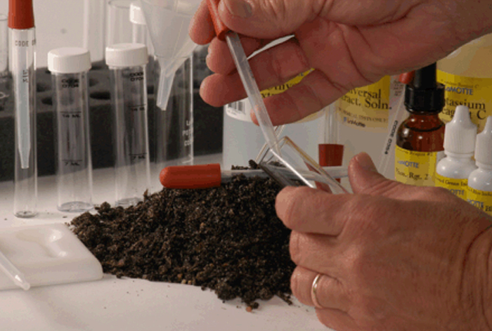

Toprağın kimyasal ve fiziksel özelliklerinin analiz edilmesi ve test edilmesi.
Toprak Analizi:
Toprak analizi, toprak özelliklerini ve bileşenlerini belirlemek için yapılan bir süreçtir. Bu analizler, toprağın verimliliğini, besin içeriğini, pH seviyesini ve diğer önemli faktörleri ölçmeye yöneliktir.
Toprak Testlerinin Önemi:
Besin Değerleri: Toprak testleri, topraktaki besin maddelerinin seviyelerini belirleyerek bitkilerin ihtiyaç duyduğu besinleri belirlemede yardımcı olur. Bu, bitkilerin sağlıklı büyümesi için gereken besin maddelerinin sağlanmasına yardımcı olur.
pH Seviyesi: Toprak testleri, toprağın pH seviyesini belirler. Bitkiler için uygun pH seviyeleri, besinlerin emilmesini etkileyebilir. Bu nedenle, toprak pH seviyesinin uygun bir aralıkta olması önemlidir.
Toprak Yapısı ve Drenaj: Toprak testleri, toprağın yapısal özelliklerini ve drenaj yeteneğini değerlendirir. Bu, su tutma kapasitesi ve hava dolaşımı gibi faktörlerin belirlenmesine yardımcı olur.
Toprak Testi Uygulamaları:
Laboratuvar Testleri: Toprak örnekleri laboratuvarlarda test edilir. Bu testler, toprak örneklerinin mineral içeriği, organik madde miktarı ve besin değerlerini belirlemeye yardımcı olur.
Mobil Uygulamalar: Bazı taşınabilir cihazlar veya mobil uygulamalar, toprak analizi için hızlı testler sunabilir. Bunlar genellikle sahada hızlı bir şekilde sonuç almayı sağlar.
Toprak testleri, tarımsal üretimde, bahçe bakımında ve çevresel projelerde toprağın uygun bir şekilde yönetilmesine yardımcı olur. Bu testler, toprakta bulunan besinleri, mineralleri ve diğer önemli bileşenleri anlamak için önemlidir.
Bilgi Almak İçin Tıkla